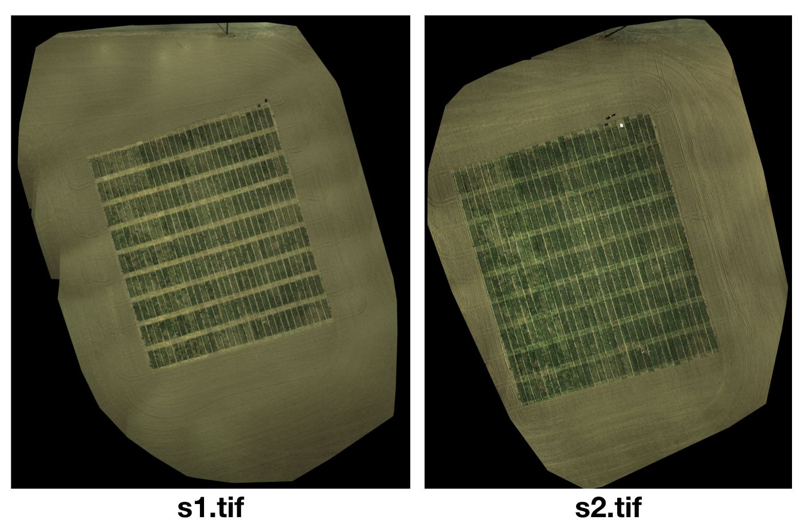
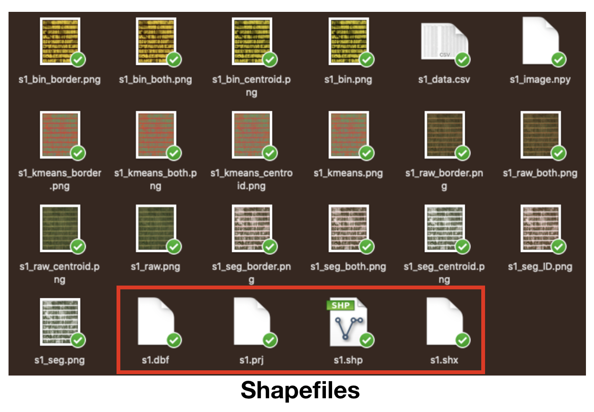
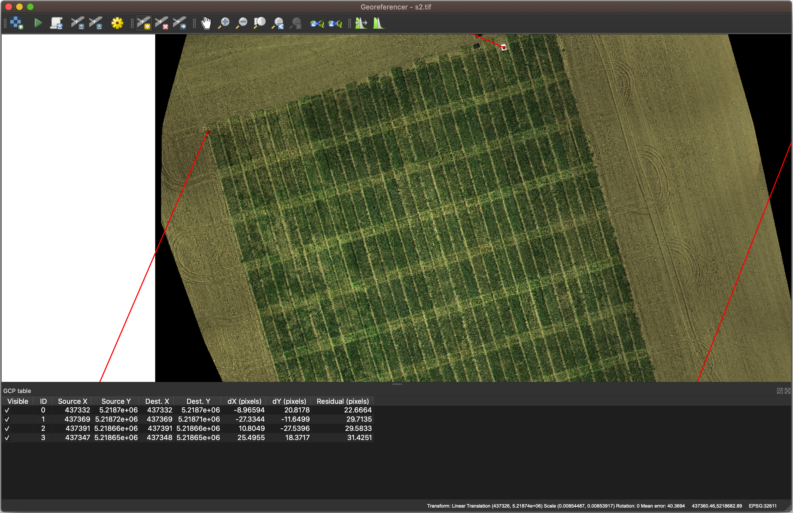
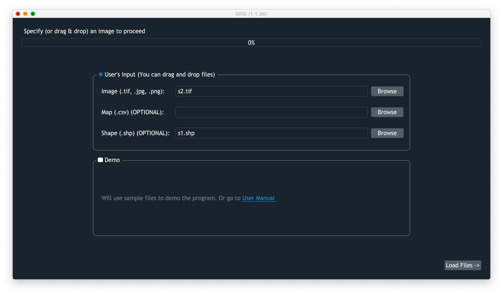
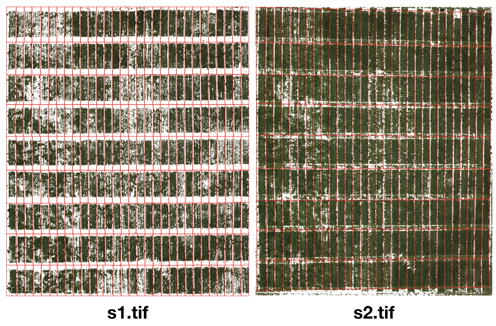

Multi-Season Images¶
Objectives¶
In this example, we’re going to demonstrate how to work with images of same field taken in multiple seasons/time points. Due to the field management would vary in different growing stages, the difference between research plants and other objects (soil, weed) can sometimes be challenging to tell. It would make the segmentation easier if we can replicate plot coordinates learned from one image (s1.tif) to another image (s2.tif).

Obtain shapefiles from GRID¶
Run GRID normally on the image s1.tif. The output shapefiles allow us to replicate the plot coordinates to the next season (image). 
Georeference the 2nd image by the 1st image¶
NOTE: This step can be skipped if the coordinate reference systsm (CRS) of two images matches well.
Before we work with s2.tif, we have to ensure that both s1.tif and s2.tif share the same CRS. As the coordinates recorded by GPS may sometimes have error from one image to another, it’s necessary to correct the georeference in QGIS. 
Here’s a tutorial on YouTube:

Load shapefiles to replicate CRS¶
After we done georeferencing s2.tif, we are ready to replicate the segmetation from s1.tif to s2.tif. We will load s2.tif as the input image this time, and load s1.shp as the input shapefile. 
Users are required to crop the area of interest (AOI) and define the pixel of interest (POI). After that, the segmentation will be carried out exactly the same way as one in s1.tif. 
Inspect tabular data¶
[1]:
# imports
import numpy as np
import pandas as pd
import os
import matplotlib.pyplot as plt
from scipy.stats import pearsonr
import h5py as h5
[3]:
# load tabular data from s1.tif and s2.tif
dt_s1 = pd.read_csv("s1_data.csv").loc[:, ["var", "area_veg", "NDVI"]]
dt_s2 = pd.read_csv("s2_data.csv").loc[:, ["var", "area_veg", "NDVI"]]
# rename column names
dt_s1.columns = ["id", "canopy_s1", "ndvi_s1"]
dt_s2.columns = ["id", "canopy_s2", "ndvi_s2"]
# merge two seasons of data by their IDs
dt = pd.merge(dt_s1, dt_s2)
dt
[3]:
| id | canopy_s1 | ndvi_s1 | canopy_s2 | ndvi_s2 | |
|---|---|---|---|---|---|
| 0 | unnamed_0 | 6139 | 0.079541 | 10756 | 0.057954 |
| 1 | unnamed_9 | 5289 | 0.064362 | 11499 | 0.050158 |
| 2 | unnamed_18 | 2175 | 0.057072 | 5965 | 0.042233 |
| 3 | unnamed_27 | 5958 | 0.060194 | 15209 | 0.040483 |
| 4 | unnamed_36 | 3293 | 0.067456 | 8394 | 0.048621 |
| ... | ... | ... | ... | ... | ... |
| 265 | unnamed_233 | 7759 | 0.084310 | 10316 | 0.099573 |
| 266 | unnamed_242 | 6455 | 0.050348 | 9391 | 0.068676 |
| 267 | unnamed_251 | 4714 | 0.043048 | 10661 | 0.032655 |
| 268 | unnamed_260 | 4696 | 0.045965 | 9780 | 0.044229 |
| 269 | unnamed_269 | 6703 | 0.079980 | 11354 | 0.061780 |
270 rows × 5 columns
Compute the correlation of NDVI between seasons¶
[36]:
r2 = pearsonr(dt.ndvi_s1, dt.ndvi_s2)[0] ** 2
plt.title("Correlation r2 of NDVI = %.3f" % r2)
plt.xlabel("NDVI (season 1)")
plt.ylabel("NDVI (season 2)")
plt.scatter(dt.ndvi_s1, dt.ndvi_s2)
[36]:
<matplotlib.collections.PathCollection at 0x7fefa8aa5550>
Compute the correlation of canopy areas between seasons¶
[37]:
r2 = pearsonr(dt.canopy_s1, dt.canopy_s2)[0] ** 2
plt.title("Correlation r2 of canopy areas = %.3f" % r2)
plt.xlabel("Canopy area (season 1)")
plt.ylabel("Canopy area (season 2)")
plt.scatter(dt.canopy_s1, dt.canopy_s2)
[37]:
<matplotlib.collections.PathCollection at 0x7fefa8e15610>
Select elite lines¶
We can select elite lines by ranking their change of canopy areas
[35]:
# use "growth rate" to represent their performance
dt.loc[:, "growth_rate"] = (dt.canopy_s2 - dt.canopy_s1) / dt.canopy_s1
# plot the performance in a histogram
plt.xlabel("Growth rate (100%)")
plt.ylabel("Count")
_ = plt.hist(dt.growth_rate.values)
[32]:
# we select lines with growth rate greater than 1
cutoff = 1
dt.loc[dt.growth_rate >= cutoff, "isElite"] = True
dt.loc[dt.growth_rate < cutoff, "isElite"] = False
# then we can replot the scatter plot by coloring the elite lines
plt.scatter(x=dt.canopy_s1,
y=dt.canopy_s2,
label="non-elite")
plt.scatter(x=dt[dt.isElite].canopy_s1,
y=dt[dt.isElite].canopy_s2,
label="elite")
plt.xlabel("Canopy area (season 1)")
plt.ylabel("Canopy area (season 2)")
plt.legend()
[32]:
<matplotlib.legend.Legend at 0x7fef58a0c290>
[18]:
# rank their performance
dt.sort_values(by="growth_rate", ascending=False, inplace=True)
dt
[18]:
| id | canopy_s1 | ndvi_s1 | canopy_s2 | ndvi_s2 | growth_rate | isElite | |
|---|---|---|---|---|---|---|---|
| 6 | unnamed_54 | 2044 | 0.064161 | 6793 | 0.044786 | 2.323386 | True |
| 63 | unnamed_29 | 2274 | 0.116536 | 6812 | 0.094472 | 1.995602 | True |
| 105 | unnamed_138 | 2498 | 0.104650 | 7121 | 0.113467 | 1.850681 | True |
| 253 | unnamed_125 | 2988 | 0.070304 | 8435 | 0.069946 | 1.822959 | True |
| 256 | unnamed_152 | 3094 | 0.078514 | 8665 | 0.060872 | 1.800582 | True |
| ... | ... | ... | ... | ... | ... | ... | ... |
| 170 | unnamed_185 | 7543 | 0.124144 | 9593 | 0.149356 | 0.271775 | False |
| 87 | unnamed_245 | 7795 | 0.093975 | 9883 | 0.123432 | 0.267864 | False |
| 26 | unnamed_234 | 8109 | 0.087209 | 10260 | 0.107430 | 0.265261 | False |
| 172 | unnamed_203 | 7375 | 0.113576 | 9316 | 0.146696 | 0.263186 | False |
| 18 | unnamed_162 | 8168 | 0.103522 | 9540 | 0.136832 | 0.167973 | False |
270 rows × 7 columns
[19]:
# extract the top-3 IDs
id_elite = dt[:3].id.values
id_elite
[19]:
array(['unnamed_54', 'unnamed_29', 'unnamed_138'], dtype=object)
Insepct the elite lines¶
[29]:
# define a function that can extract specific items from h5 files
# in the h5 file, <ID name> + "_raw" stands for a image without removing noise and shaded areas
# it allows us to better inspect the image
def extract_imgs_from_h5(filename, ids):
ls_imgs = []
with h5.File(filename, "r") as f:
for id in ids:
img = f[id + "_raw"][:]
ls_imgs += [np.swapaxes(img, 0, 1)] # use np.swapaxes() to rotate image by 90°
return ls_imgs
[30]:
# extract images of elite lines from two seasons
imgs_s1 = extract_imgs_from_h5("s1.h5", id_elite)
imgs_s2 = extract_imgs_from_h5("s2.h5", id_elite)
[31]:
# plot the images
fig, axes = plt.subplots(2, 3, figsize=(20, 10))
plt.subplots_adjust(hspace=0, bottom=0, top=.35)
for i in range(3):
axes[0, i].imshow(imgs_s1[i])
axes[0, i].set_title(id_elite[i] + (" (season 1)"))
axes[1, i].imshow(imgs_s2[i])
axes[1, i].set_title(id_elite[i] + (" (season 2)"))